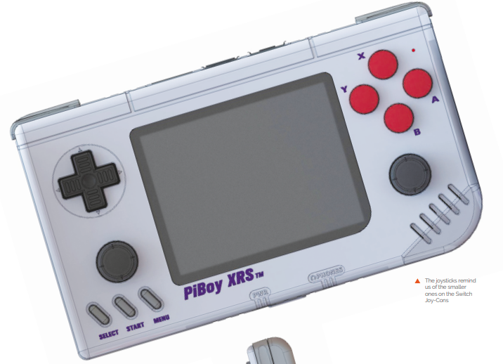
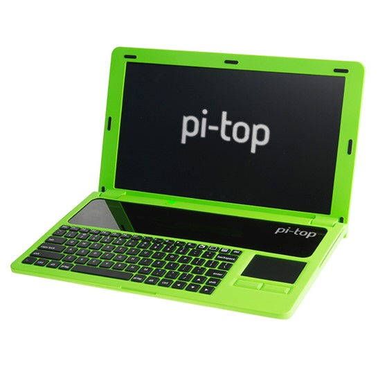
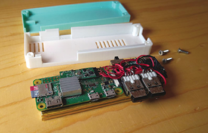

Raspberry Pi projekti
Natrag
Raspberry Pi je odličan kada je potrebno jeftino računalo za projekt.
Našao sam neke fora projekte koje mislim da bi trebalo prikazati:
PiBoy XRS - prijenosna konzola na bazi Raspberry Pi-a

Pi-Top - set za napraviti laptop od Raspberry Pi-a

Tiny NAS - minijaturni cloud server na bazi Raspberry Pi-a

Natrag